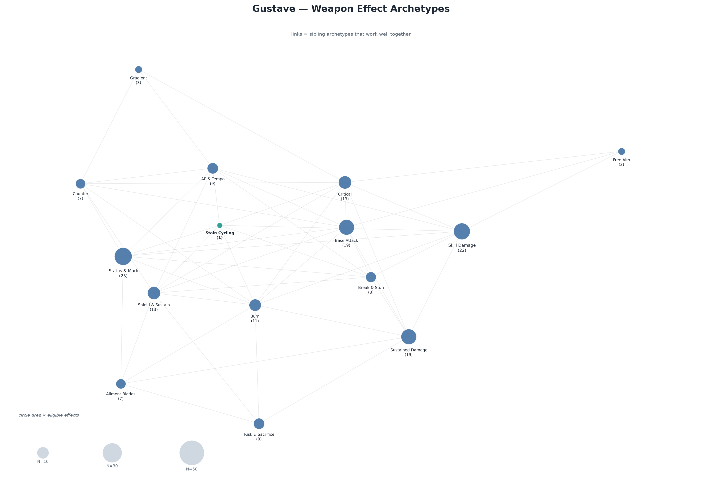
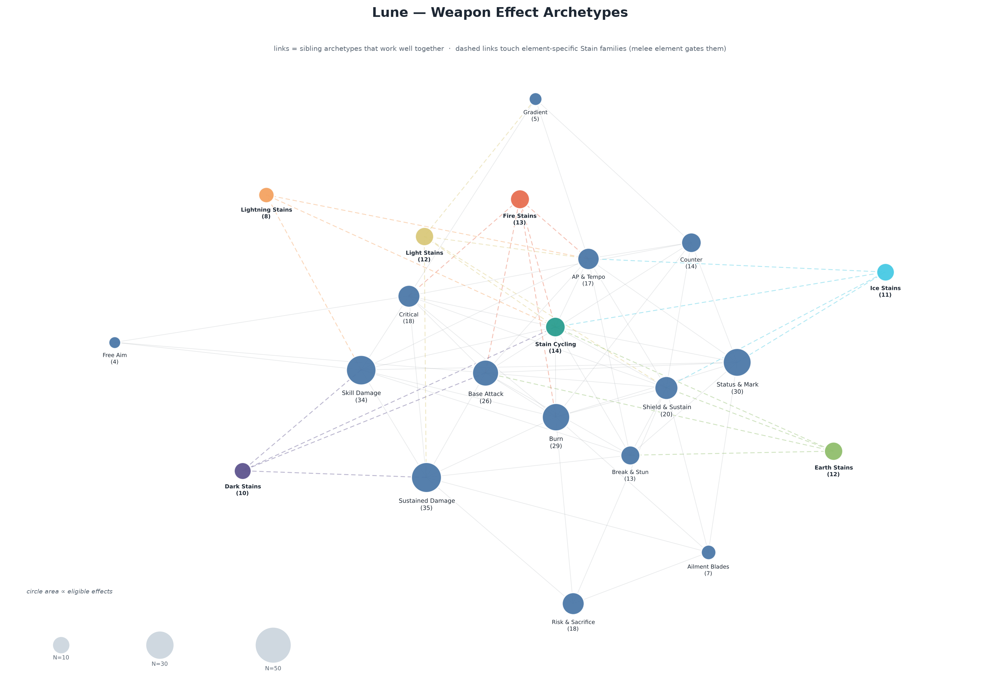
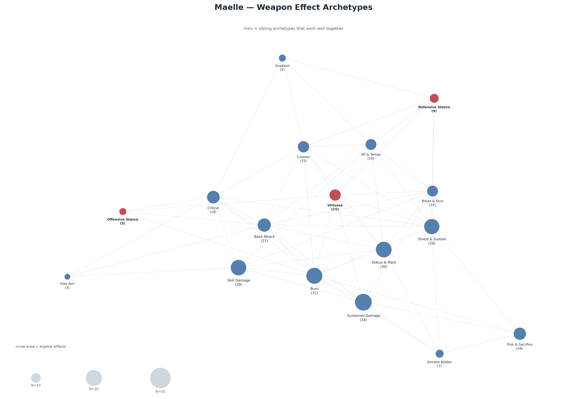
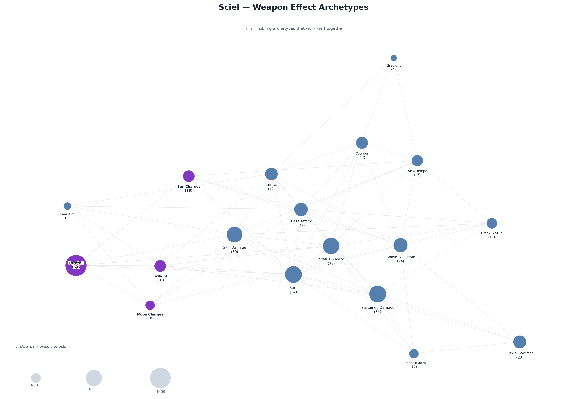
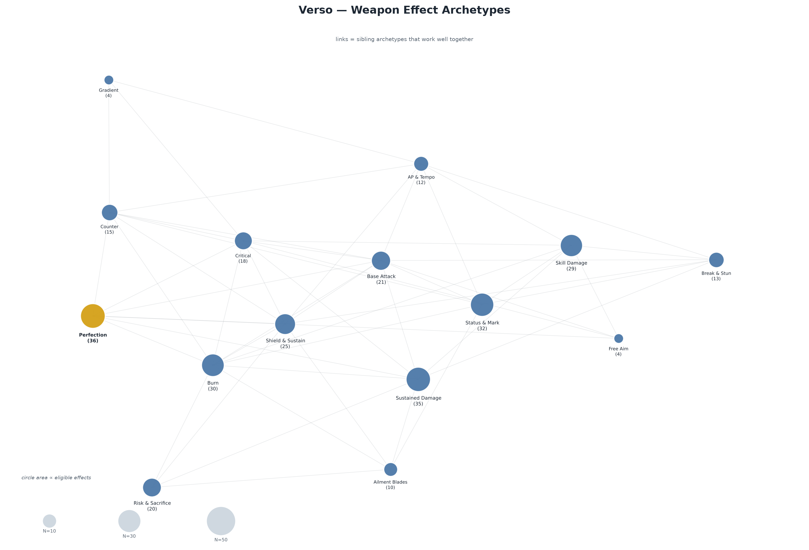
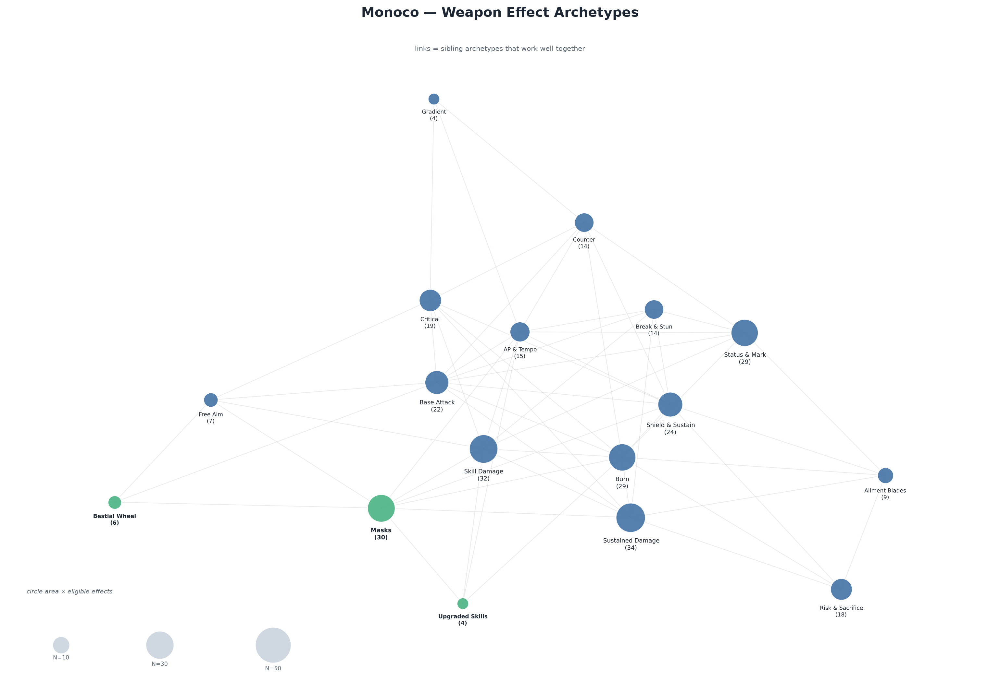

Weapon Effect Archetypes
Review package — docs/weapon-effect-archetypes.md for the full rationale.
Circle area ∝ number of eligible effects; lines are sibling links that work well together.
- Tier split: T1 = 1 wildcard · T2 = 1 archetype + 1 wildcard · T3 = 2 + 1 · T4 = 3 + 1 · T5 = 4 + 1. Wildcard fills the weakest slot.
- One primary archetype per weapon; every archetype pick draws from the primary or a sibling link. Same archetype may repeat, same effect never.
- Tier mix preserved: each pick still rolls the weapon-tier effect mix before the archetype draw.
- Lune: stain effects follow the melee element; Physical/Void keep neutral/random stain generation. Wildcard is gated too.
- Risk & Sacrifice contains AutoDeath, self-Burn/Blight/Berserk, death payoffs and revives.
- Do Not Use effects stay out of all pools.
Gustave — 14 circles

Lune — 21 circles

Maelle — 18 circles

Sciel — 19 circles

Verso — 15 circles

Monoco — 18 circles
